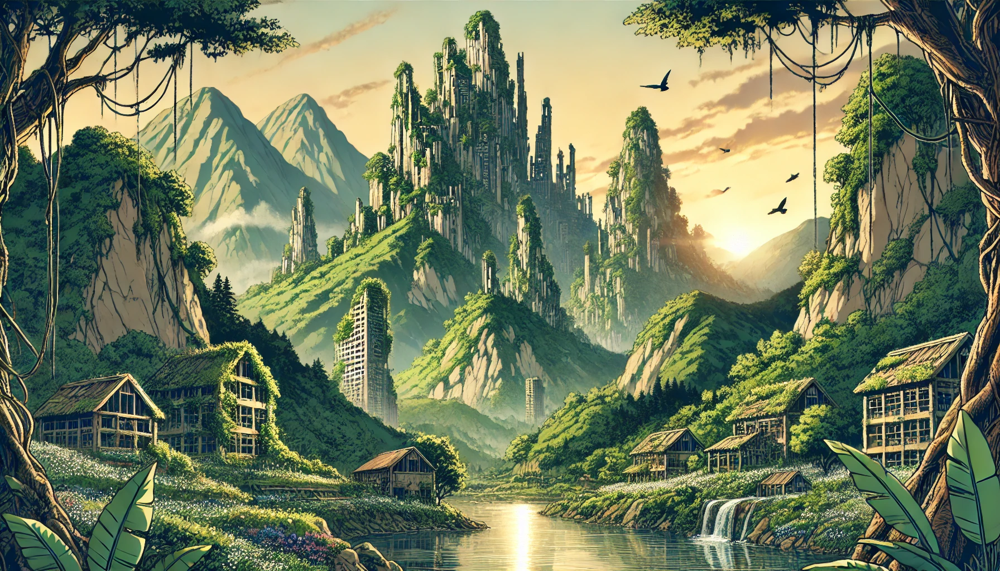
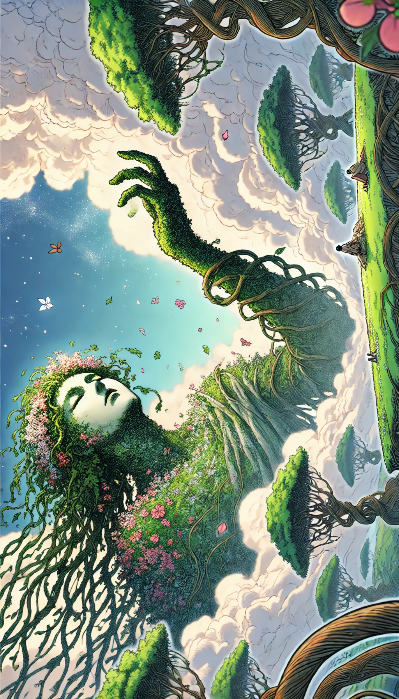

Year XYXY: 1000 Years After the Catastrophe
A lady sits in a dimly lit room, surrounded by eager-eyed children, their expressions filled with curiosity and wonder as she begins her tale.
Lady:
"Once upon a time, there was a girl with beautiful brown hair and mesmerizing green eyes. She was kind, warm-hearted, and deeply devoted to helping others. She cared for the needy and fed starving children—she was like a saint. But one fateful day, wicked people made a terrible mistake. They killed her closest friend and humiliated her. In that moment, something inside her broke.
Rage consumed her. Her once gentle demeanor vanished. Her hair turned jet black, her eyes burned like blood-red embers, and her dress became drenched in crimson. She wielded twin swords, cutting down every inhuman monster that stood before her. Her fury grew uncontrollable, and as she continued her rampage, more and more people fell—both the guilty and the innocent alike.
And then, when the world teetered on the brink of annihilation, two divine spirits descended. They imprisoned her within an eternal shell, where she now sleeps peacefully in the sky, forever sealed away from the world."
A hush falls over the room. Then, a curious child raises his hand.
Child 1: "Did this really happen?"
Lady: "Yes."
Child 2: "But if everyone died, how did people know about it?"
Lady: "This story comes from a book written by Arono Silynka. He was the sole survivor of the childcare facility where it all happened. He witnessed everything firsthand and documented it for the world to remember.
According to his book, on the day Rowana was sealed, he heard whispers echoing in his ears. The voice said:
'A new era has begun. If you wish to protect it, start fresh. Never again allow humanity to lose itself.'
It was a warning—and a promise."
Another child frowns, deep in thought.
Child 3: "Humanity? Isn't it obvious that humans should always act like humans?"
Lady: "It may seem obvious to you now, but according to the stories passed down from our elders, there was a time when humans became worse than devils. They abandoned kindness, lost their morality, and drowned in greed and cruelty. That is why the gods sent Rowana—to teach them a lesson and to pave the way for a new beginning."
The children sit in fascinated silence, absorbing every word.
A Changed World
A thousand years have passed since Rowana’s power tore the world apart. The devastation was so immense that only a handful of people survived. Rebuilding was not easy—the sheer scale of destruction was beyond comprehension. Even now, remnants of the old world remain. Piles of debris, once ruins of cities, have become overgrown with thick vines and grass, forming towering mountains of nature-bound wreckage.
Despite the hardships, humanity has changed—completely. The fear of losing everything again was carved so deeply into their hearts that it reshaped their very way of life. People learned the true meaning of kindness, compassion, and morality. Ethics, nobility, and justice became the core of their society. Generations were raised to value not only human life but also nature itself.
However, not everyone embraced this change. In the shadows, there were those who rejected the old tale of destruction. They claimed the legend was nothing more than myth, that the figure floating in the sky was just an unexplained anomaly of nature. Blinded by greed, they formed secret organizations, operating in hiding, clinging to the belief that power and wealth were the true measures of success.
But the world had changed. The righteous now stood at the top. And those who sought to repeat the mistakes of the past would soon realize that some lessons should never be forgotten.